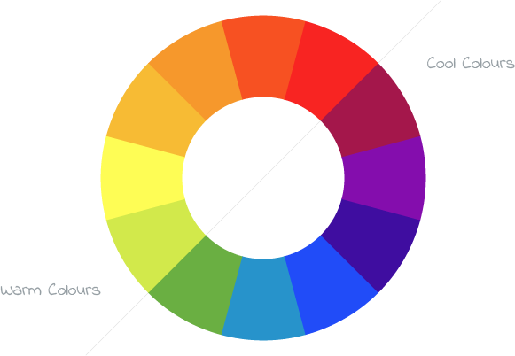

We see colour all around us and it is used in many different ways…to tell stories, to warn against danger, to trigger certain emotions, to highlight key information and so on.
As a developer of user interfaces, the use of colour must be carefully considered so that it matches the needs of the target audience and makes the interface visually appealing and easy to use.
Think first
Consider an interface that you have used recently. What colours were used in the interface? How did the use of colour make you feel? Did you find the interface visually appealing and easy to use? If not, why not?
Make a note of your thoughts in the box below. You might find it useful to share these thoughts with other class members and/or your class teacher.
Now click through the slide panel below to explore some ‘rules’ around the use of colour in design.
Limit your use of colours
While it may be tempting to use every colour of the rainbow in your interface, using too many colours will only confuse your users. Instead, pick two or three colours that work well together and stick to them. This will help to build meaning in your use of colour and give your interface a consistent look and feel.
Check for contrasts and clashes
Once you’ve picked your colours, consider how they contrast (work well together) or if they clash. When colours clash, one colour can become very difficult to see and read. The main body content (text) on your interface will need to contrast well against the background colour, in order to be readable. This is why so many products use black text on a white background for important information, to make sure that it is clear and easy to read.
Take a look at the following examples to see the difference between colour contrast and colour clash:
Contrast
Contrast
Clash
Clash
Adding texture
Consider whether your colours are going to be matt or gloss (shiny)? Will colours be smooth or patterned/textured? Will you use solid colours (all the same shade, like this ) or will you apply a gradient (to include a range of shades, like this )? Consider what would work best for the target audience identified.
Stick to the house style
If you create an interface for an organisation, the organisation may have a set of ‘house style’ colours. These colours may be associated to the organisation’s brand and/or logo. For example, an interface for Sainsbury’s would inevitably include the use of orange in the colour scheme, as customers recognise this colour as part of the company’s brand. A house style may also specify the use of particular text styles (known as fonts, which we will learn more about shortly).

Key point
A colour wheel can be a useful tool when deciding on the use of colour in your interface. This colour wheel shows a range of warm colours and cool colours – you can use these depending on the style and nature of your interface. Similarly, the colour wheel can help you to identify colours that will contrast and those that will clash. A good rule of thumb is that colours that are directly opposite each other on the wheel will be complementary, while colours that are close to each other on the wheel are likely to clash.